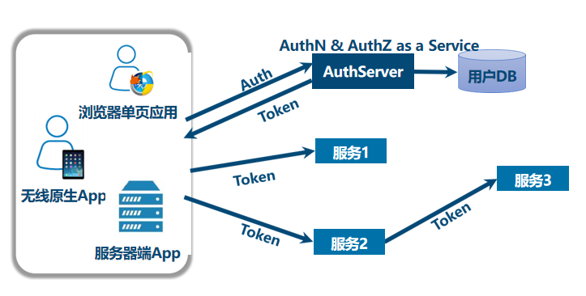
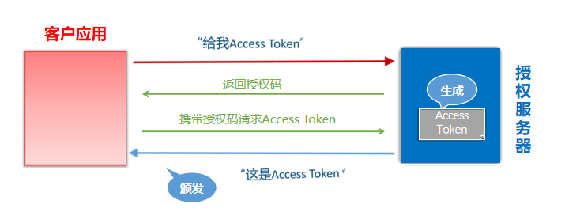
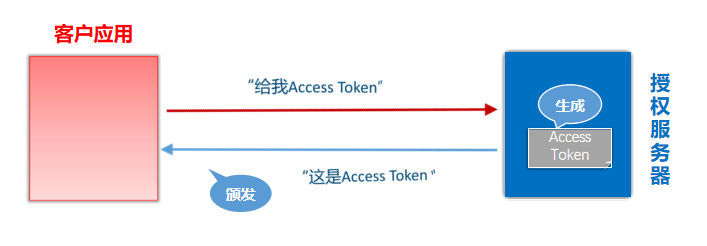
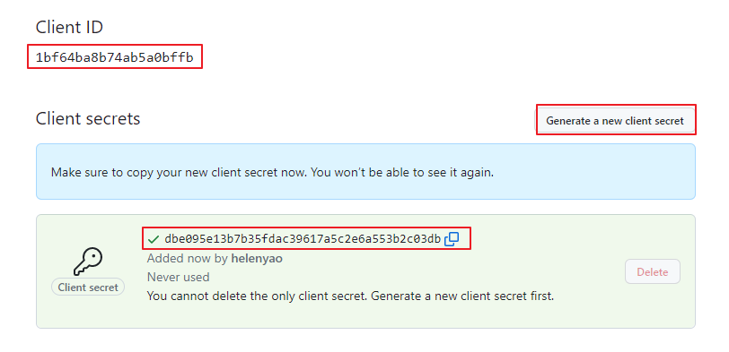
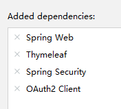

OAuth2简介
OAuth2是什么
“Auth” 表示 “授权” Authorization
“O” 是 Open 的简称，表示 “开放”
连在一起就表示 “开放授权”，OAuth2是一种开放授权协议。
OAuth2最简向导：The Simplest Guide To OAuth 2.0
OAuth2的角色
OAuth 2协议包含以下角色：
- 资源所有者（Resource Owner）：即用户，资源的拥有人，想要通过客户应用访问资源服务器上的资源。
- 客户应用（Client）：通常是一个Web或者无线应用，它需要访问用户的受保护资源。
- 资源服务器（Resource Server）：存储受保护资源的服务器或定义了可以访问到资源的API，接收并验证客户端的访问令牌，以决定是否授权访问资源。
- 授权服务器（Authorization Server）：负责验证资源所有者的身份并向客户端颁发访问令牌。
OAuth2的使用场景
开放系统间授权
- 社交登录/第三方登陆
- 开放API：例如云冲印服务的实现
现代微服务安全
单块应用安全：用户输入密码登陆后，应用服务器校验完之后，会在服务器里面存入一个session，然后把携带session Id的Cookie上传给用户的浏览器。下一次请求，浏览器会携带Cookie去访问服务器。

微服务安全：由于都微服务，每个细小的服务都部署在不同的服务器中，这是就需要一个单独的授权服务进行统一管理

企业内部应用认证授权
SSO：Single Sign On 单点登录
IAM：Identity and Access Management 身份识别与访问管理
OAuth2的四种授权模式
RFC6749：更复杂的流程图
RFC 6749 - The OAuth 2.0 Authorization Framework (ietf.org)
阮一峰：更简单的图表展示
OAuth 2.0 的四种方式 - 阮一峰的网络日志 (ruanyifeng.com)
第一种方式：授权码（authorization-code）
授权码（authorization code），指的是第三方应用先申请一个授权码，然后再用该码获取令牌。
这种方式是最常用，最复杂，也是最安全的，它适用于那些有后端的 Web 应用。授权码通过前端传送，令牌则是储存在后端，而且所有与资源服务器的通信都在后端完成。这样的前后端分离，可以避免令牌泄漏。
注册客户应用：客户应用如果想要访问资源服务器需要有凭证，需要在授权服务器上注册客户应用。注册后会获取到一个ClientID和ClientSecrets

Resource Owner：理解为用户
User Agent：理解为浏览器
Client：理解为要访问的应用（资源服务器）
Client Identifier：Client id
Redirection URI：回调地址
- A：授权之后，浏览器跳转的地址
- D：Client给授权服务器发送授权码（authorization code）之后，授权服务器给client发送Access Token的地址
Refresh Token：防止用户登录超时的
第二种方式：隐藏式（implicit）
隐藏式（implicit），也叫简化模式，有些 Web 应用是纯前端应用，没有后端。这时就不能用上面的方式了，必须将令牌储存在前端。
RFC 6749 规定了这种方式，允许直接向前端颁发令牌。这种方式没有授权码这个中间步骤，所以称为隐藏式。这种方式把令牌直接传给前端，是很不安全的。因此，只能用于一些安全要求不高的场景，并且令牌的有效期必须非常短，通常就是会话期间（session）有效，浏览器关掉，令牌就失效了。

Fragment：放在#后面的，叫URL片段，如https://a.com/callback#token=ACCESS_TOKEN。
- 将访问令牌包含在URL锚点中的好处：锚点在HTTP请求中不会发送到服务器，减少了泄漏令牌的风险。
步骤C后，用户虽然获得了Token，但是前端还是无法解析，需要在发一个请求到Web-Hosted Client Resource服务器，Web-Hosted Client 会发送一个脚本给前端解析
第三种方式：密码式（password）
密码式（Resource Owner Password Credentials）：如果你高度信任某个应用，RFC 6749 也允许用户把用户名和密码，直接告诉该应用。该应用就使用你的密码，申请令牌。
这种方式需要用户给出自己的用户名/密码，显然风险很大，因此只适用于其他授权方式都无法采用的情况，而且必须是用户高度信任的应用（比如公司内部应用）。


第四种方式：凭证式（client credentials）
凭证式（client credentials）：也叫客户端模式，适用于没有前端的命令行应用，即在命令行下请求令牌。
这种方式给出的令牌，是针对第三方应用的，而不是针对用户的，即有可能多个用户共享同一个令牌。

Client直接将认证信息给Authorization Server，然后Authorization Server将Token给Client。不需要用户输入密码
授权类型的选择

- 开始
- 访问令牌的拥有人是谁？
- 拥有人是机器（Client）：凭证式
- 是用户，客户应用程序的类型
- 判断客户应用程序的类型：
- Web应用，需要通过浏览器来访问：授权码
- 原生APP（手机App）
- 且应用程序是第一方程序（客户应用和资源服务器是企业自己开发的内部程序）：密码式
- Resource Owner Credentials Grant=Resource Owner Password Credentials
- 且应用程序是第三方程序（客户应用和资源服务器不是企业自己开发的）：授权码
- 且应用程序是第一方程序（客户应用和资源服务器是企业自己开发的内部程序）：密码式
- 单页应用SPA（只要前端没有后端）：
- 且应用程序是第一方程序（企业自己开发的内部程序）：密码式
- 且应用程序是第三方程序（客户应用和资源服务器不是企业自己开发的）：隐藏式
Spring中的OAuth2
Spring中的实现
Spring Security
- 客户应用（OAuth2 Client）：OAuth2客户端功能中包含OAuth2 Login
- 资源服务器（OAuth2 Resource Server）
Spring
- 授权服务器（Spring Authorization Server）：它是在Spring Security之上的一个单独的项目。
Notice：在单体的情况下，资源服务和授权服务也可以同事在同一个服务器上
相关依赖
<!-- 资源服务器 -->
<dependency>
<groupId>org.springframework.boot</groupId>
<artifactId>spring-boot-starter-oauth2-resource-server</artifactId>
</dependency>
<!-- 客户应用 -->
<dependency>
<groupId>org.springframework.boot</groupId>
<artifactId>spring-boot-starter-oauth2-client</artifactId>
</dependency>
<!-- 授权服务器 -->
<dependency>
<groupId>org.springframework.boot</groupId>
<artifactId>spring-boot-starter-oauth2-authorization-server</artifactId>
</dependency>
授权登录的实现思路
资源服务器：比如我们需要获取微信/github的用户名，头像等信息
授权服务器也是微信/github等在管
GiuHub社交登录案例
创建应用
注册客户应用：登录GitHub，在开发者设置中找到Settings–>Developer Settings–>OAuth Apps，创建一个application，为客户应用创建访问GitHub的凭据：

填写应用信息：默认的重定向URI模板(Authorization callback URL)为{baseUrl}/login/oauth2/code/{registrationId}。registrationId是ClientRegistration的唯一标识符。
一些疑问：
Homepage URL和：Authorization callback URL应该都属于 Redirection URL，应该是有客户端配置的，为什么提前告诉GIThub。
- 我在GIThub的文档中看到了下面这句话：The
redirect_uriparameter is optional. If left out, GitHub will redirect users to the callback URL configured in the OAuth app settings. If provided, the redirect URL’s host (excluding sub-domains) and port must exactly match the callback URL. The redirect URL’s path must reference a subdirectory of the callback URL. 这样就解释了为什么可以在GitHub上配置了。那么问题有来了：如何在Spring项目中配置redirect_uri呢？Homepage URL：
配置主页的URl。应该是在授权之后，重定向到
http://localhost:8080/。但是为什么我如果在浏览器访问的是http://localhost:8080/demo并不会出现重定向Authorization callback URL：
- 这个URL应该是步骤E——通知Token的
- 默认的重定向URI模板(Authorization callback URL)为
{baseUrl}/login/oauth2/code/{registrationId}。registrationId是ClientRegistration的唯一标识符。- 那么这个registrationId是如何确定的呢？
获取应用程序id，生成应用程序密钥：
创建测试项目
引入依赖
创建一个springboot项目oauth2-login-demo，创建时引入如下依赖
配置OAuth客户端属性
application.yml：
spring:
security:
oauth2:
client:
registration:
github:
client-id: 7807cc3bb1534abce9f2
client-secret: 008dc141879134433f4db7f62b693c4a5361771b
# redirectUri: http://localhost:8200/login/oauth2/code/github
创建Controller
@Controller
public class IndexController {
@GetMapping("/")
public String index(
Model model,
@RegisteredOAuth2AuthorizedClient OAuth2AuthorizedClient authorizedClient,
@AuthenticationPrincipal OAuth2User oauth2User) {
model.addAttribute("userName", oauth2User.getName());
model.addAttribute("clientName", authorizedClient.getClientRegistration().getClientName());
model.addAttribute("userAttributes", oauth2User.getAttributes());
return "index";
}
}
创建html页面
resources/templates/index.html：这个页面主要展现的是用户的各种信息
<!DOCTYPE html>
<html xmlns="http://www.w3.org/1999/xhtml" xmlns:th="https://www.thymeleaf.org" xmlns:sec="https://www.thymeleaf.org/thymeleaf-extras-springsecurity5">
<head>
<title>Spring Security - OAuth 2.0 Login</title>
<meta charset="utf-8" />
</head>
<body>
<div style="float: right" th:fragment="logout" sec:authorize="isAuthenticated()">
<div style="float:left">
<span style="font-weight:bold">User: </span><span sec:authentication="name"></span>
</div>
<div style="float:none"> </div>
<div style="float:right">
<form action="#" th:action="@{/logout}" method="post">
<input type="submit" value="Logout" />
</form>
</div>
</div>
<h1>OAuth 2.0 Login with Spring Security</h1>
<div>
You are successfully logged in <span style="font-weight:bold" th:text="${userName}"></span>
via the OAuth 2.0 Client <span style="font-weight:bold" th:text="${clientName}"></span>
</div>
<div> </div>
<div>
<span style="font-weight:bold">User Attributes:</span>
<ul>
<li th:each="userAttribute : ${userAttributes}">
<span style="font-weight:bold" th:text="${userAttribute.key}"></span>: <span th:text="${userAttribute.value}"></span>
</li>
</ul>
</div>
</body>
</html>
案例分析
登录流程
A 网站(上面的测试案例)让用户跳转到 GitHub，并携带参数ClientID 以及 Redirection URI。
对于下面流程图的A步骤
GitHub 要求用户登录，然后询问用户”A 网站要求获取用户信息的权限，你是否同意？”
客户端能跳转到这个页面，是因为在
CommonOAuth2Provider里面配置了:builder.authorizationUri("https://github.com/login/oauth/authorize");
用户同意（步骤B），GitHub 就会重定向回 A 网站，同时发回一个授权码。（步骤C）
A 网站使用授权码，向 GitHub 请求令牌。（步骤D）
客户端能够找到获取令牌的接口是因为配置了这个：
builder.tokenUri("https://github.com/login/oauth/access_token");
GitHub 返回令牌.（步骤E）
A 网站使用令牌，向 GitHub 请求用户数据。
builder.userInfoUri("https://api.github.com/user");
GitHub返回用户数据
A 网站使用 GitHub用户数据登录
CommonOAuth2Provider
CommonOAuth2Provider是一个预定义的通用OAuth2Provider，为一些知名资源服务API提供商（如Google、GitHub、Facebook）预定义了一组默认的属性。
例如，授权URI、令牌URI和用户信息URI通常不经常变化。因此，提供默认值以减少所需的配置。
因此，当我们配置GitHub客户端时，只需要提供client-id和client-secret属性。
GITHUB {
public ClientRegistration.Builder getBuilder(String registrationId) {
ClientRegistration.Builder builder
= this.getBuilder(
registrationId,
ClientAuthenticationMethod.CLIENT_SECRET_BASIC,
//授权回调地址(GitHub向客户应用发送回调请求，并携带授权码)
"{baseUrl}/{action}/oauth2/code/{registrationId}");
builder.scope(new String[]{"read:user"});
//授权页面
builder.authorizationUri("https://github.com/login/oauth/authorize");
//客户应用使用授权码，向 GitHub 请求令牌
builder.tokenUri("https://github.com/login/oauth/access_token");
//客户应用使用令牌向GitHub请求用户数据
builder.userInfoUri("https://api.github.com/user");
//username属性显示GitHub中获取的哪个属性的信息
// User: </span><span sec:authentication="name"></span>
// You are successfully logged in <span style="font-weight:bold" th:text="${userName}"></span>
builder.userNameAttributeName("id");
//登录页面超链接的文本
// via the OAuth 2.0 Client <span style="font-weight:bold" th:text="${clientName}"></span>
builder.clientName("GitHub");
return builder;
}
},
转载请注明来源，欢迎对文章中的引用来源进行考证，欢迎指出任何有错误或不够清晰的表达。可以在下面评论区评论，也可以邮件至 1909773034@qq.com